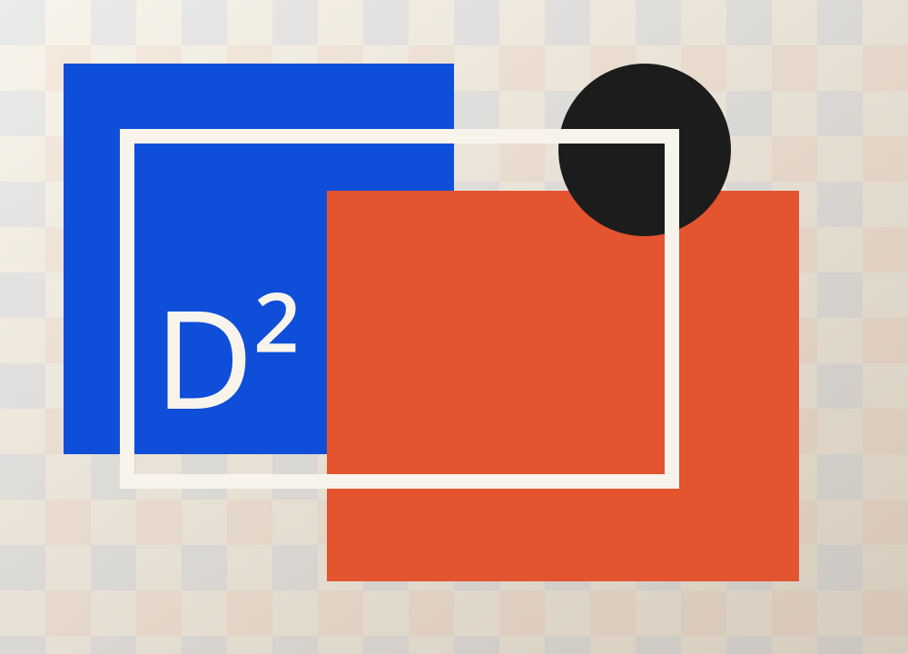
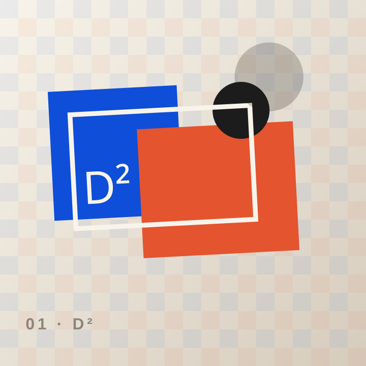
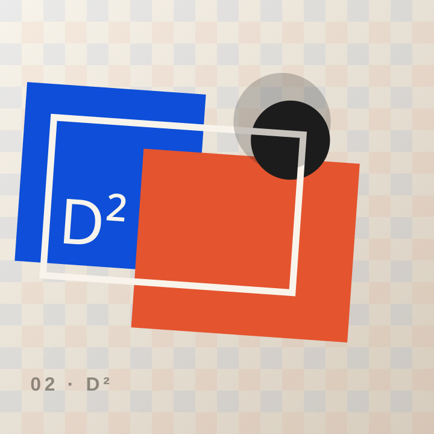
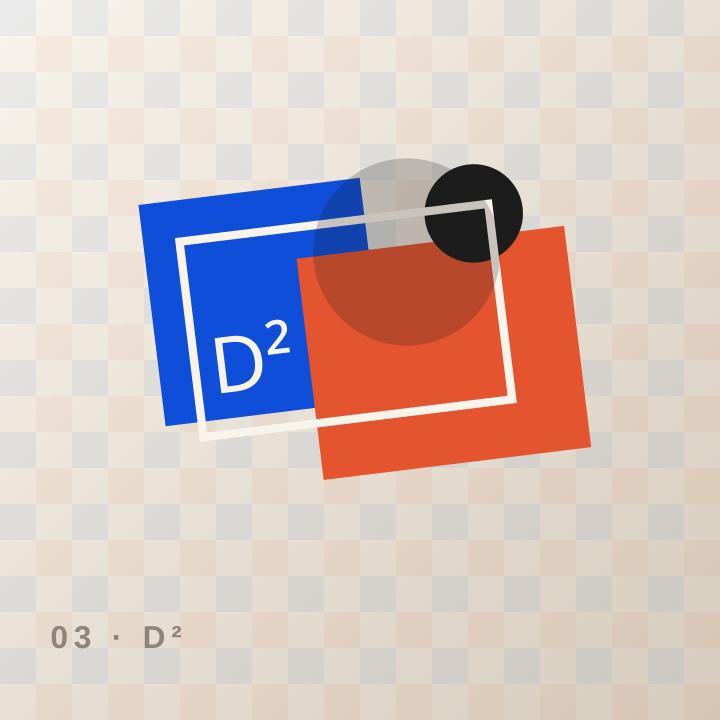

Identidad
Nombre, tono, sistema visual y aplicaciones.
Concepto de estudio creativo y digital construido como demostración ante un formulario sin información suficiente.

DEOC² Studio es una propuesta de portafolio creativo multipágina; no representa un negocio definido en el formulario, que solo contenía valores numéricos sin contexto.
La arquitectura responde a la descripción del alumno, no a una plantilla genérica.
Nombre, tono, sistema visual y aplicaciones.
Arquitectura, contenido y diseño responsive.
Prototipos, flujos y sistemas de interfaz.
Ilustraciones vectoriales locales, rápidas y editables. No dependen de bancos externos.

Nombre, tono, sistema visual y aplicaciones.

Arquitectura, contenido y diseño responsive.

Prototipos, flujos y sistemas de interfaz.
Cada etapa define qué ocurre, qué recibe la persona y cuál es el siguiente paso.
Objetivo, audiencia y restricciones.
Concepto, referencias y sistema.
Páginas, componentes y prototipo.
Archivos, guía y próximos pasos.
Contenido estructurado para personas, buscadores y motores de respuesta.
No. El formulario contenía “65”, “1” y otros valores sin significado suficiente; este es un concepto editorial de contingencia.
No. Son casos visuales ficticios y están rotulados como conceptos.
Nombre, actividad, público, portafolio, datos de contacto y objetivos comerciales.
El diseño ya contempla contenido, navegación, accesibilidad, metadatos, respuestas directas y estructura técnica. Las integraciones reales se conectan con credenciales del negocio.